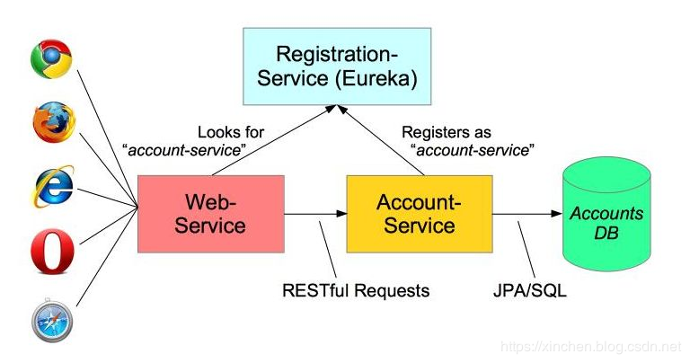
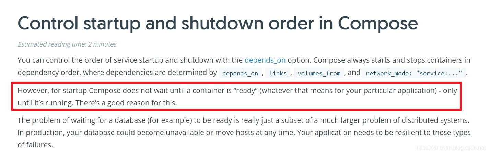
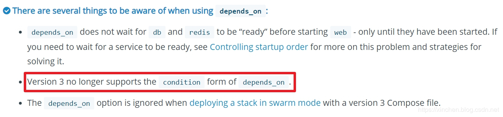
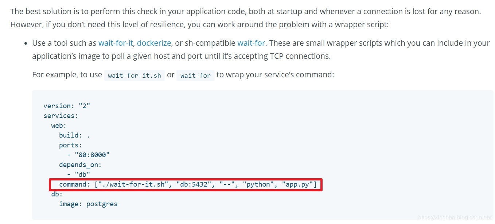

原文连接:https://www.cnblogs.com/bolingcavalry/p/11784526.html
在docker-compose编排多个容器时，需要按实际情况控制各容器的启动顺序，本文是《docker-compose下的java应用启动顺序两部曲》的第一篇，文中会分析启动顺序的重要性，以及启动顺序有问题时会有什么样的影响，再给出临时解决的和官方推荐的两种解决方案，为下一篇的实战做好铺垫。
环境信息
本次实战的环境如下：
- 操作系统：CentOS Linux release 7.7.1908
- docker：1.13.1
- docker-compose：1.24.1
spring cloud：Finchley.RELEASE
分布式环境中的依赖关系
在分布式环境中，各服务之间可能存在依赖关系，例如SpringCloud环境中的应用在启动时都会先往注册中心Eurka发起请求，如下图（来自spring官方博客：https://spring.io/blog/2015/07/14/microservices-with-spring ）：

从上图可知，如果Eureka的服务不可用，就会影响业务服务的功能；
Docker环境中的依赖关系
- 上述服务如果用docker-compose编排在一起，也面依赖着问题：Eureka容器启动完毕并且能提供http服务以后，业务服务的容器才能在Eureka注册成功并取得服务列表，通常我们都使用depends_on参数来设定依赖关系；
- 以下是个docker-compose.yml文件，里面有两个容器：eureka和service，eureka是注册中心，service是业务服务，service启动后要去eureka注册，为了确保启动顺序，service配置了depends_on参数：
version: '3'
services:
eureka:
image: bolingcavalry/eureka:0.0.1-SNAPSHOT
container_name: eureka
restart: unless-stopped
service:
image: bolingcavalry/service:0.0.1-SNAPSHOT
container_name: service
restart: unless-stopped
command: sh -c 'java -Xms1g -Xmx1g -cp /app/resources:/app/classes:/app/libs/* com.bolingcavalry.waitforitdemo.ServiceApplication'
depends_on:
- eureka- 上述yml文件能解决依赖问题吗？service服务启动时能否成功在eureka注册？来试试吧，在Linux电脑上创建docker-compose.yml文件，内容如上所示；
- 在docker-compose.yml所在目录执行docker-compose up，docker服务会先去hub.docker.com下载镜像，然后依次创建容器，控制台会同时打印eureka和service的日志，如下图所示，service注册eureka失败了，请注意图中的文字分析：

- 为何会注册失败呢？继续看后面的日志，如下图，service注册失败后eureka才初始化完成，所以前面的service注册会失败：

- 至此可以确定：depends_on参数可以确保eureka容器启动后再启动service容器，但我们真正想要的，是eureka容器启动后，并且eureka服务初始化完毕进入可用状态后，再启动service容器，显然depends_on参数达不到我们的要求；
- docker官方文档也证实了这一点，如下图红框所示：
 - 看来depends_on参数解决不了我们的问题，需要去寻找其他方法；
另外您可能会说：没关系，service会自动重新注册，但是在真实环境中，不是每个服务都有能力去自己解决依赖不可用的问题，例如spring-cloud-config服务如果起不来，依赖它的服务可能会立即停止；
有一种临时方法(此方法V3版语法不再支持)
- 如果eureka容器配置了健康检查，那么service容器可以配置健康检查依赖来控制启动时机，具体的做法可以参考官方示例，如下所示，地址是：https://docs.docker.com/compose/compose-file/compose-file-v2/ ：
version: "2.4"
services:
web:
build: .
depends_on:
db:
condition: service_healthy
redis:
condition: service_started
redis:
image: redis
db:
image: redis
healthcheck:
test: "exit 0"从上述编排内容可见：db容器有健康检查，可以确定db容器的服务是否可用，web容器的depends_on参数内可以配置condition，这样就做到了只有redis已经启动并且db的健康检查通过，才会启动web容器；
- 上述配置看起来似乎是个不错的方案，在我们这里，只要给eureka配置要健康检查，再让service容器的depends_on参数内配置condition: service_healthy就可以了；
- 不幸的是：在docker-compose的第三版语法中，取消了condition参数！文档地址是：https://docs.docker.com/compose/compose-file/ ，如下图红框所示：
 - 因此，condition参数看似好用，但是从V3版开始的docker-compose.yml已经不再支持该参数，不能作为标准的解决方案；
官方推荐的方案
如下图红框所示，docker官方推荐使用wait-for-it.sh脚本来解决问题，地址：https://docs.docker.com/compose/startup-order/ ：

至此，本篇已经分析了docker-compose下容器启动顺序的问题，下一篇文章，我们用SpringCloud应用来做实战，将其做到在docker-compose下有序启动；
参考文章
如果您对docker容器健康检查有兴趣，可以参考以下文章：
- 《极速体验docker容器健康》；
-
欢迎关注公众号：程序员欣宸